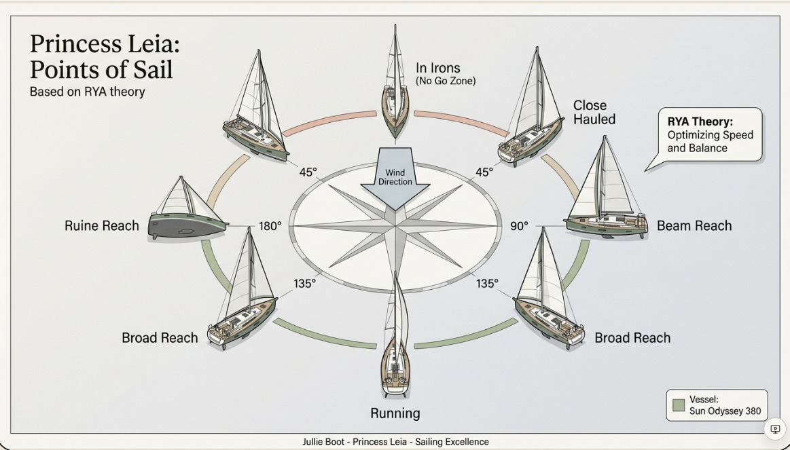

Welkom aan Boord, Karen & Allaert
Princess Leia is jullie snelle Jeanneau Sun Odyssey 380 voor de RYA Competent Crew training in Jersey. Bereid jullie voor op de reusachtige getijden en winden van het Kanaal met deze interactieve boordgids.
Jersey Crew Progress
Voortgang van jullie boord-onboarding & RYA criteria.
Snelkoppelingen Boord-systemen
Boordtoilet (Starboard Heads)
Zuigerbediening, spoelen en holding tank safety.
Yanmar Dieselmotor
Koude start procedure, gashendel en watercontrole.
Nav Station & Schakelaars
B&G plotter, VHF marifoon standby en 12V breakers.
Accusleutels (Aft Cabin)
Locatie en werking van de engine- en service-isolators.
Schip Tour — naslagwerk
Bekijk de plaat en klik links op een boordsysteem (anker, motor, gas, toilet, lieren…) om de tweetalige (NL/EN) handleiding en veiligheidschecklist te openen. Tik op de plaat voor volledig scherm.
Systemen Overzicht
Systems Overview
Loading...
Loading...
Praktijk Vaardigheden (Competent Crew)
Sailing Academy
De theorie achter het zeilen — hoofdstuk voor hoofdstuk, in flipbook-stijl. Lees de lessen door en sla onderaan het zeilwoordenboek op zodat je de termen aan boord meteen herkent. Doel: niet blanco aankomen.
Meertalig Zeilwoordenboek
Kerntermen die je tijdens de RYA-training aan boord hoort — Nederlands & Engels. Zodat je niet blanco aankomt.
Bootsnelheid
Helling
Windhoek
Trim Advies Coach:

Interactieve Knopentrainer
Jullie Reisplan (6 – 17 juni 2026)
Boekingen & Referentienummers
Praktisch
Tijdens & na de cursus
Steden onderweg
RYA Competent Crew Syllabus
Kruis af welke vaardigheden jullie tijdens de week aan boord beheersen. Voortgang wordt bewaard op dit toestel.
Final Checklist — vóór vertrek
Loop dit af vóór je naar Jersey vertrekt. Aangevinkte items blijven bewaard.